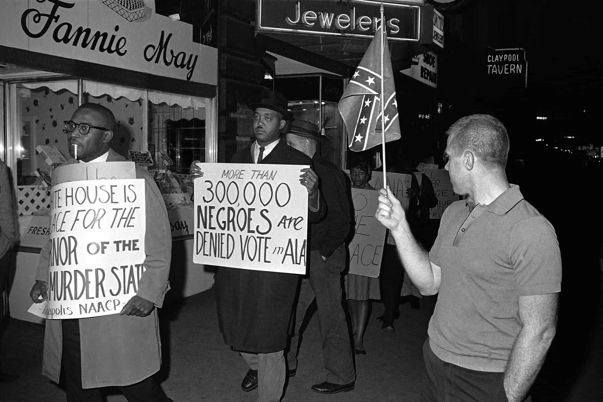

Our team chose to do the project on "The Ballot and Me" by Langston Huges because of what is happening all around the world today (2020). As the team dug deep into the play, we noticed how relevant it is to the minorities in today's society. People of color (POC) had to fight for their rights back in the 1800's because the southern slave-holding states sensed danger in letting POC vote. As of today (2020), Voter ID laws have underlying racial biases which prevent minorities from enganing in active participation. With the 2020 election, active participation was encouraged to lift the restrictions against minority populations. Organizations and indivduals are bringing cases of voter descrimination to court in an attempt to rewrite these wrongdoings. For this project we wanted to show how there is still a problem with discrimination against the minorites whenever it comes to voting. As the team continued working on the project we realized the importance of each historical characters presence, and how the characters who had large speaking parts typically had more prominent roles in civil rights and voting equality in real life.
